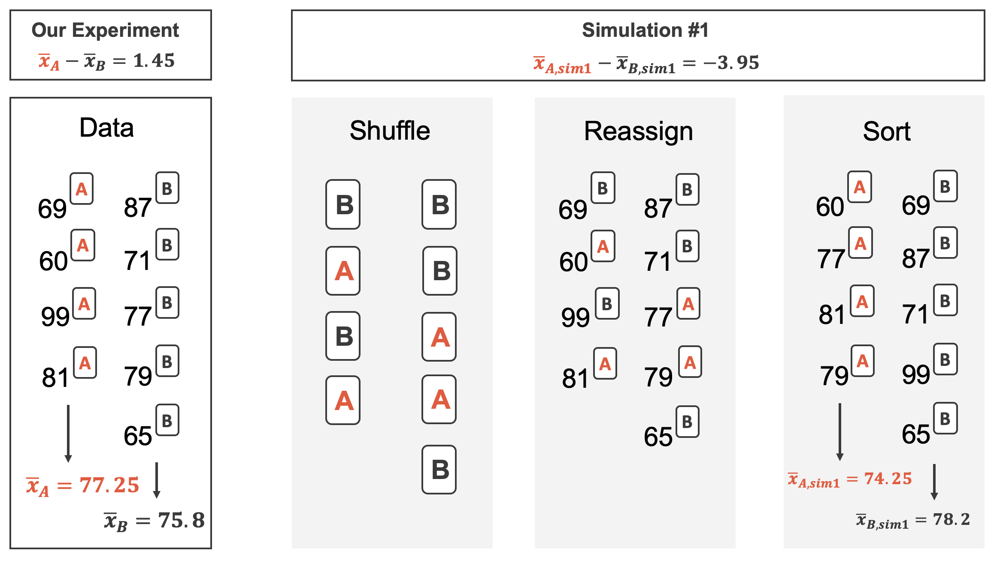
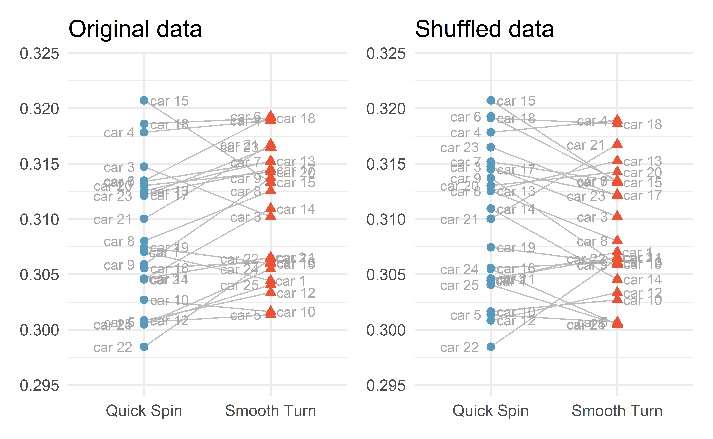

Inference for means
STA 101L - Summer I 2022
Raphael Morsomme
Welcome
Announcements
Homework 6 due Thursday
Inference project
- Start to think about data or a question that interests you.
Remaining homework due on Mon/Thu instead of Wed/Sun?
Announcements
Midterm survey
review holdout and CV
more live coding (?)
more individual assignments in class
OH before Sunday’s HW \(\Rightarrow\) HW due on Monday (OH Monday morning)
website
external links will open a new window
slide changes will not be pushed to browser history
see these steps to print the slides
Recap
One proportion
HT via simulation
CI via bootstrap
Two proportions
HT via simulation
CI via bootstrap
Outline
- The normal distribution
- One mean (case 3)
- Two means (case 4)
- Paired means (case 3)
The normal distribution
The normal distribution
The distribution of a numerical variable is often modeled with a normal distribution.
Two parameters
The mean (\(\mu\)) – location
The standard deviation (\(\sigma\)) – spread
\[ N(\mu, \sigma) \] The standard normal distribution \(N(\mu = 0, \sigma = 1)\) is plotted on the previous slide.
03:00
Property I
If the variable \(X\sim N(\mu, \sigma)\), then for any number \(a\) and \(b\)
\[ X + a \sim N(\mu+a, \sigma), \]
\[ bX \sim N(b\mu, b \sigma) \]
and
\[ bX + a \sim N(b\mu+a, b\sigma). \]
Property II
If the variables \(X\sim N(\mu_1, \sigma_1)\) and \(Y\sim N(\mu_2, \sigma_2)\) are independent, then
\[ X+Y \sim N(\mu_{tot} = \mu_1 + \mu_2, \sigma_{tot} = \sqrt{\sigma_1^2 + \sigma_2^2}) \]
Alternative parameterization
\(N(\mu, \sigma^2)\), where \(\sigma^2\) is the variance.
Property I gives
\[ bX + a \sim N(b\mu + a, b^2 \sigma^2) \]
and property II gives
\[ X+Y \sim N(\mu_{tot} = \mu_1 + \mu_2, \sigma_{tot}^2 = \sigma_1^2 + \sigma_2^2) \]
The mean of the sum is the sum of the means.
The variance of the sum is the sum of the variances.
Individual exercise - normal property
Suppose you have a sample with \(n=10\) independent observations in which each observation follows a standard normal distribution. That is,
\[ X_1 \sim N(0,1), X_2 \sim N(0,1), \dots, X_{10} \sim N(0, 1). \]
Use the normal properties to derive the distribution of the sample average
\[ \bar{x} = \dfrac{X_1 + X_2 + \dots + X_{10}}{10} \]
What happens to the sd/variance of \(\bar{x}\) as the sample size \(n\) increases?
04:00
Individual exercise -
Exercise 19.5 – for our purpose in part b standard error is equivalent to standard deviation.
02:00
The 68, 95, 99.7 rule

One mean
Setup
Population parameter: mean \(\mu\)
Sample statistic: sample average \(\bar{x}\)
Hypothesis testing:
\(H_0:\mu=\mu_0\) where \(\mu_0\) is a fixed number
\(H_a:\mu\neq \mu_0\)
Confidence interval: range of plausible values for \(\mu\).
Individual exercise - statistic and parameter
Exercise 19.1
01:00
Example – car price
What is the average price of a car on Awesome Car?
\[\begin{align*} \bar{x} & = \dfrac{18,300+20,100+9,600+10,700+27,000}{5} \\ & = 17,140 \end{align*}\]Source: IMS
Hypothesis test via simulation
Normal model
Let us assume that car prices follow a normal distribution with mean \(\mu\) and sd \(\sigma\):
\[ \text{price} \sim N(\mu, \sigma) \]
\(H_0:\mu=10,000\)
\(H_a:\mu\neq 10,000\)
Simulate many samples under \(H_0\).
Determine if the observed data could have plausibly arisen under \(H_0\).
Problem
To simulate from the normal distribution, we need to specify both the mean \(\mu\) and the sd \(\sigma\).
Problem: under \(H_0\) we only know that \(\mu = 10,000\); we do not know what value to use for \(\sigma\)!
\(\Rightarrow\) We cannot conduct a hypothesis test via simulation!
Confidence interval via bootstrap
Bootstrapping
Sample with repetition from the observed sample to construct many bootstrap samples.
Bootstrap samples \(\Rightarrow\) sampling distribution \(\Rightarrow\) CI

Source: IMS
Bootstrap in R
03:00
CI for the standard deviation \(\sigma\)

Any statistic, but not any sample
Bootstrap any statistic
You can bootstrap almost any statistic you want!
The quality of the sample matters!
A statistical analysis can only be as good as the sample collected. Here, a sample of \(5\) cars contains very limited information about the population; it would be useful to have a larger sample.
Two means
Setup
A population divided in two groups.
Population parameter: difference in mean
\[ \mu_{diff}=\mu_1-\mu_2 \]
Sample statistic: difference in proportion in the sample
\[ \bar{x}_{diff}=\bar{x}_1-\bar{x}_2 \]
\(H_0:\mu_{diff}=0\) (no difference between the two groups)
\(H_a:\mu_{diff}\neq0\)
Individual exercise -
Exercise 20.1
01:30
Example – two class exams
A professor considers two designs for an exam. Are the two types of exam equally difficult?
Group exercise - two proportions
Compute are \(\bar{x}_a\), \(\bar{x}_b\) and \(\bar{x}_{diff}\)? Do you intuitively feel that the data provide convincing evidence that the two exams are not equally difficult?
Hint: use the command summarize.
03:00
Hypothesis test via simulation
\(H_0:\mu_{diff}=0\)
\(H_a:\mu_{diff}\neq 0\)
Simulate many samples under \(H_0\) (no difference)
Determine if the observed data could have plausibly arisen under \(H_0\)
Simulating under \(H_0\)
Under \(H_0\), there is no difference between the two exams
\(\Rightarrow\) the score is independent of the type of exam
\(\Rightarrow\) randomly re-assign the scores independently of the exam type.
Tip
This is very similar to the procedure for two proportions.
 Source: IMS
Function for computing the test statistic
For-loop for simulating under \(H_0\)
Sampling distribution
p-value
- the probability that \(\bar{x}_{diff}^{sim}\ge\) 3.1 or \(\bar{x}_{diff}^{sim}\le\) -3.1.
Conclusion
Using the usual significance level \(\alpha = 0.05\), we fail to reject the null hypothesis
- it is plausible that the observed difference in scores is due to random luck
- the difference is not statistically significant.
03:00
Confidence interval via bootstrap
Bootstrap CI
Same idea as before: sample with repetition from the observed data to construct many bootstrap samples.
Bootstrap samples \(\Rightarrow\) sampling distribution \(\Rightarrow\) CI

Source: IMS
Bootstrap in R
sample_observed_a <- d %>% filter(exam == "a")
sample_observed_b <- d %>% filter(exam == "b")
set.seed(0)
sample_bootstrap(sample_observed_a) # bootstrap sample# A tibble: 58 x 2
score exam
<dbl> <fct>
1 58 a
2 59 a
3 81 a
4 71 a
5 67 a
6 58 a
7 80 a
8 72 a
9 58 a
10 72 a
# ... with 48 more rows# A tibble: 55 x 2
score exam
<dbl> <fct>
1 61 b
2 83 b
3 68 b
4 71 b
5 82 b
6 46 b
7 78 b
8 72 b
9 64 b
10 83 b
# ... with 45 more rowsresults <- tibble(x_diff_bar = numeric())
for(i in 1 : 1e3){
d_boot_a <- sample_bootstrap(sample_observed_a) # bootstrap sample
d_boot_b <- sample_bootstrap(sample_observed_b) # bootstrap sample
x_diff_bar <- compute_x_diff(rbind(d_boot_a, d_boot_b)) # bootstrap statistic
results <- results %>% add_row(x_diff_bar)
}CI and HT
Two sides of the same coin
The two CIs include 0. This indicates that 0 is a plausible value for the difference in mean in the population. This is exactly what the HT concluded!
Individual exercises - CI
Exercise 20.5 part a only
03:00
Paired means
Paired data
Paired data: two groups in which each observation in one group has exactly one corresponding observation in the other group.
Example: pre/post-evaluations; supermarket items; batteries and electronic devices; tires and cars.
Paired data are like one mean data
Paired data can be analyzed like the one-mean case (case 3)!
Example – tire brand
We want to compare the longevity of two brands of tire. The response variable is tire tread after 1000 miles.
25 cars drove 1000 miles. On each car, one tire was from Smooth Turn and another one was from Quick Spin. The other two tires were baseline tires.
set.seed(1)
bias <- runif(25, -0.01, 0.01)
brandA <- rnorm(25, bias + 0.310, 0.003)
brandB <- rnorm(25, bias + 0.308, 0.003)
car <- c(paste("car", 1:25))
miny <- min(brandA, brandB) - .003
maxy <- max(brandA, brandB) + .003
tires <- tibble(
tread = c(brandA, brandB),
car = rep(car, 2),
brand = c(rep("Smooth Turn", 25), rep("Quick Spin", 25))
) %>%
arrange(car)
head(tires)# A tibble: 6 x 3
tread car brand
<dbl> <chr> <chr>
1 0.304 car 1 Smooth Turn
2 0.307 car 1 Quick Spin
3 0.302 car 10 Smooth Turn
4 0.303 car 10 Quick Spin
5 0.307 car 11 Smooth Turn
6 0.305 car 11 Quick Spin Source: IMS
04:00
CI via booststrap
Exactly the same as with one mean (case 3).
tires_diff <- tires %>%
pivot_wider(names_from = brand, values_from = tread) %>%
mutate(tread_diff = `Smooth Turn` - `Quick Spin`) %>%
select(car, tread_diff)
head(tires_diff)# A tibble: 6 x 2
car tread_diff
<chr> <dbl>
1 car 1 -0.00258
2 car 10 -0.00107
3 car 11 0.00192
4 car 12 0.00251
5 car 13 0.00271
6 car 14 0.00639Simply construct a CI for the variable tread_diff with bootstrap samples.
Group exercise - CI for paired data
Use the R code from the one-mean case (case 3) to construct a CI for the difference in tire tread.
10:00
HT via simulation
\(H_0:\mu_{diff}=0\)
\(H_a:\mu_{diff}\neq 0\)
Simulate many samples under \(H_0\) (no difference)
Determine if the observed data could have plausibly arisen under \(H_0\)
Simulating under \(H_0\)
Under \(H_0\), there is no difference between the two tire brands
\(\Rightarrow\) tire tread is independent of tire brand
\(\Rightarrow\) randomly re-assign tire tread independently of tire brand.
Re-assign within
The re-assignment happens within a car; either switch the two values or keep the original allocation.
Re-assigning two cars
Re-assigning all cars
Individual exercise - simulated difference
Exercise 21.9
02:00
R function to shuffle data
shuffle_data <- function(data){
tires %>%
group_by(car) %>%
mutate(tread = sample(tread))
}
set.seed(0)
tires_shuffled <- shuffle_data(tires)
head(tires)# A tibble: 6 x 3
tread car brand
<dbl> <chr> <chr>
1 0.304 car 1 Smooth Turn
2 0.307 car 1 Quick Spin
3 0.302 car 10 Smooth Turn
4 0.303 car 10 Quick Spin
5 0.307 car 11 Smooth Turn
6 0.305 car 11 Quick Spin # A tibble: 6 x 3
# Groups: car [3]
tread car brand
<dbl> <chr> <chr>
1 0.307 car 1 Smooth Turn
2 0.304 car 1 Quick Spin
3 0.303 car 10 Smooth Turn
4 0.302 car 10 Quick Spin
5 0.307 car 11 Smooth Turn
6 0.305 car 11 Quick Spin R function for computing the test statistic
For-loop for simulating under \(H_0\)
Sampling distribution
p-value and conclusion
- the probability that \(\bar{x}_{diff}^{sim}\ge\) 0.0021 or \(\bar{x}_{diff}^{sim}\le\) -0.0021.
results %>%
mutate(is_more_extreme = stat_sim >= stat_obs | stat_sim <= -stat_obs) %>%
summarize(p_value = mean(is_more_extreme))# A tibble: 1 x 1
p_value
<dbl>
1 0.012Using the usual significance level \(\alpha = 0.05\), we reject \(H_0\).
Individual exercise - HT
Exercise 21.11
02:00
To pair or not to pair?
Always pair
If the data can paired, you should always do it! Pairing data yields an analysis that is more powerful:
narrower CI
smaller p-values
HT for two means (case 4)
Let us conduct a hypothesis test for the tire data, but this time without pairing the data.
\(\Rightarrow\) This is simply a hypothesis test for two means.
Larger p-value
compute_x_diff <- function(data){
x_bar <- data %>%
group_by(brand) %>%
summarize(x_bar = mean(tread))
x_diff_bar <- x_bar$x_bar[1] - x_bar$x_bar[2]
return(x_diff_bar)
}
compute_x_diff(tires)[1] -0.0020934x_diff_obs <- compute_x_diff(tires)
results %>%
mutate(is_more_extreme = abs(x_diff_bar) >= abs(x_diff_obs)) %>%
summarize(p_value = mean(is_more_extreme))# A tibble: 1 x 1
p_value
<dbl>
1 0.229The p-value is larger than \(\alpha=0.05\); we fail to reject the null hypothesis.
Group exercise - wider CI
Use the R code from the two-mean case (case 4) to construct a CI for the difference in tire tread (the observations are not paired).
You should obtain a wider interval.
10:00
Recap
Recap
- The normal distribution
- One mean (case 3)
- Two means (case 4)
- Paired means (case 3)